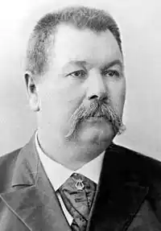
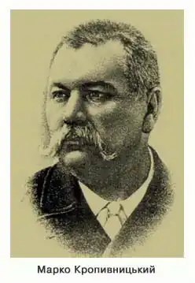
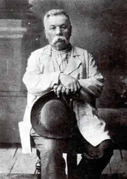
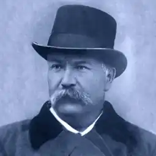

Кропивницький Марко Лукич
(1840-1910)
драматург, актор, режисер, композитор Народився 10(22) травня 1840 р. у селі Бежбайраки Бобринецького повіту Херсонської губернії (тепер с. Кропивницьке Новоукраїнського району Кіровоградської області). Початкову освіту здобув у приватній школі шляхтича М.К.Рудковського в слободі Олександрівка. 1856 року із похвальною грамотою закінчив трикласне повітове училище в м. Бобринці. Служив там же у повітовому суді. У 1862-1863 рр. — вільний слухач юридичного факультету Київського університету. З лютого 1864 р. — знову на службі в Бобринецькому повітовому суді. З 1865 — у м. Єлисаветградi (тепер м. Кіровоград), куди перенесено повітовий центр. Працює секретарем поліційного управління, згодом — у Єлисаветградському сирітському суді. На 28-му році життя одружився з Олександрою Костянтинівною Вукотич (1851-1880). З 1869 р. — секретар Бобринецької міської думи. 1871 р. виходить у відставку й перебирається до Одеси, де 12 листопада 1871 р. дебютує як актор-професіонал у складі трупи народного російського театру графів Маркових і Чернишова (вистава за п’єсою Квітки-Основ’яненка "Сватання на Гончарівці"). З 1873 р. — у складі Харківського театру Александрова—Колюпанова. На літній театральний сезон 1874 р. М.Л.Кропивницький отримує запрошення до Петербурга, де виступає з великим успіхом. У лютому 1875 р. вирушає на гастролі в Галичину, де стає наставником і режисером галицького театру "Руська бесіда", привносить ряд новацій у його діяльність. В 1876—1881 рр. — у складі російських труп Сімферополя, Єлисаветграда, Кременчука. 1882 року засновує театральне товариство, до якого згодом приєднуються кращі тогочасні українські актори. З 1885 р. М.Л.Кропивницький очолював різні українські театральні трупи, які гастролювали по більшості губерній Російської імперії. 1890 р. оселився на хуторі Затишок під Харковом; одночасно з працею на хуторі очолював українські трупи, часто виїздив із ними на гастролі. Помер у вагоні залізничного поїзда, прямуючи з гастролей в Одесі до Харкова. Похований у Харкові. Літературні здібності проявилися у М.Л.Кропивницького дуже рано: ще в дитячі роки він писав вірші, складав пісні. Над першою п’єсою "Микита Старостенко, або Незчуєшся, як лихо спобіжить" почав працювати 1863 року в Києві, а завершив її в Бобринці. 1873 року автор цю п’єсу суттєво переробив. Вона мала кілька редакцій і відома під назвою "Дай серцеві волю — заведе в неволю". Усього М. Л. Кропивницький створив понад 40 різних п’єс — оригінальних і на сюжети інших авторів. М.Л.Кропивницький своєю багатогранною діяльністю виховав ціле покоління українських акторів-професіоналів, за що був визнаний "батьком українського театру". 21 рік — з 1881 по 1902 — він залишався провідною постаттю української сцени. Його чудові акторські дані, які дивували сучасників (деякі професійні секрети Марка Лукича так і лишилися для них непоясненними і загадковими), доповнювалися прекрасним голосом — високим басом надзвичайно широкого діапазону. Крім того, він добре знався на музиці й сам писав мелодії для багатьох п’єс, розумівся на образотворчому мистецтві (це, зокрема, дозволяло йому керувати створенням декорацій), був тонким і спостережливим психологом, що постійно проявлялося у його роботі як режисера. Театральні критики Петербурга слушно порівнювали виступи трупи М.Л.Кропивницького з виступами відомої на увесь світ німецької трупи "Майнінгенців", яка в 70-х роках XIX століття відвідала й Російську імперію. Схожість ця полягає у театральному новаторстві "батька українського театру": сповідуванні нової тоді ідеї створення під час вистави акторського ансамблю, заміні мальованих декорацій об’ємними, відтворенні театральних сцен в усіх побутових деталях (часом це набувало повного натуралізму) тощо. Кропивницький багато зробив для формування самобутнього репертуару українського театру. В цьому повною мірою виявив не тільки свій талант організатора, а й громадського діяча та патріота. Як і багато інших діячів підневільної України, М.Л.Кропивницький зростав за складних і неоднозначних життєвих обставин. З малих літ доля часто була жорстокою і немилосердною до нього. Життя його батьків було розбите життєвими обставинами, хоч обоє вони були людьми обдарованими (Лука Іванович, незважаючи на власне сирітство, зумів стати управителем маєтку; Капітоліна Іванівна чудово грала на музичних інструментах, співала і танцювала). Після розлучення з дружиною, котра зійшлася з родовитим паном, Л.І.Кропивницький мусив лишити сина у чужих людей (на службі у попа). Незважаючи на величезний потяг до знань, який не згасав у нього і в зрілому віці, М.Л.Кропивницький не зміг здобути систематичної спеціальної освіти. Однак він знав кілька мов (польську, французьку, німецьку, російську). Під час навчання у Бобринці, зустрівшись із власною матір’ю, навчався у неї гри на музичних інструментах; тоді ж, 1854 року, він вперше побував на циркових виставах, почав брати участь у любительських театральних постановках. Звідтоді захоплення театром і стало головним у його житті. А образи навколишнього — побаченого, відчутого, пережитого й передуманого — склали могутню життєву основу його багатогранної творчості.